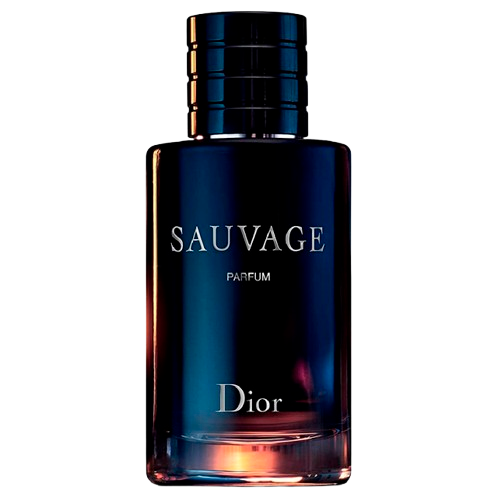
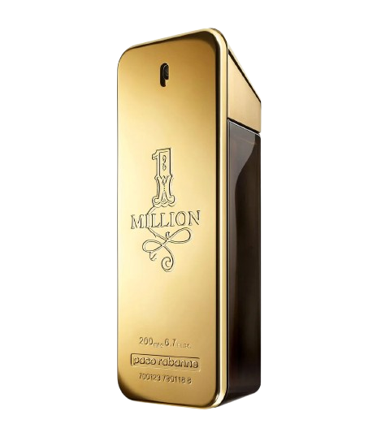

Perfume Importados
Origem
Os perfumes importados como conhecemos hoje têm origem principalmente na Europa, especialmente na França, que se tornou o berço da perfumaria moderna a partir do século XVII. A cidade de Grasse, no sul da França, ficou famosa por cultivar flores como jasmim, lavanda e rosa, usadas na produção de essências finas. Com o tempo, a França passou a ser reconhecida mundialmente pela qualidade e sofisticação de suas fragrâncias.Outros países europeus também contribuíram para o desenvolvimento da perfumaria, como a Itália, que teve papel importante no início do uso de fragrâncias alcoólicas, e a Inglaterra, onde o perfume se popularizou entre a nobreza. Hoje, marcas francesas, italianas e até americanas dominam o mercado global de perfumes importados, combinando tradição, tecnologia e arte para criar fragrâncias exclusivas.
Perfumes

212 Vip
O 212 VIP é um perfume importado da marca Carolina Herrera, lançado em 2010, inspirado no estilo de vida sofisticado, moderno e exclusivo da juventude de Nova York. O número “212” representa o código telefônico de Manhattan, símbolo de elegância, festas e glamour — e o nome “VIP” destaca a ideia de pessoas únicas, confiantes e cheias de atitude.A fragrância foi criada para quem gosta de se destacar. É envolvente e marcante, com notas que misturam rum e maracujá no topo, almíscar e gardênia no coração, e um toque de baunilha e fava tonka no fundo. Essa combinação dá ao perfume um aroma sensual, energético e ao mesmo tempo sofisticado.
R$699,90
Jean Paul
Os perfumes Jean Paul Gaultier são uma celebração da ousadia e da individualidade. Misturando sensualidade, arte e rebeldia, cada criação traduz o espírito livre e provocante que define o estilista. As fragrâncias da marca não apenas perfumam — elas contam histórias, despertam emoções e revelam diferentes facetas da personalidade de quem as usa.Com combinações olfativas intensas e memoráveis, que transitam entre o clássico e o inovador, os perfumes Gaultier são feitos para pessoas autênticas, confiantes e apaixonadas por se destacar. O design dos frascos é outro espetáculo à parte: verdadeiras obras de arte que desafiam convenções e transformam o ato de perfumar-se em um ritual de expressão e sedução.
R$1.099
Savage
Sauvage Parfum de Christian Dior é uma fragrância âmbar fougère masculina que combina intensidade e sofisticação. Lançado em 2019 e assinado pelo renomado perfumista François Demachy, este perfume traz uma experiência olfativa marcante desde a primeira nota. As notas de topo, compostas por bergamota, tangerina e elemi, oferecem uma abertura fresca e vibrante, que evolui para um aroma profundo e envolvente. Sauvage Parfum é versátil e elegante, perfeito tanto para o uso diário quanto para jantares especiais ou ocasiões em que você deseja deixar uma impressão inesquecível.
R$709,00
One Million
One Million é um perfume masculino marcante, luxuoso e ousado. Criado para o homem confiante, sedutor e que gosta de chamar atenção, o aroma combina notas quentes, doces e picantes, transmitindo poder e sofisticação. O frasco em forma de barra de ouro simboliza riqueza e sucesso. A assinatura visual icônica da fragrância .Logo nas primeiras borrifadas, ele exala um frescor cítrico e mentolado, que logo dá lugar a uma mistura doce e quente de canela e couro. O resultado é um perfume intenso e envolvente, com ótima fixação e projeção — ideal para noites, festas e ocasiões especiais.
R$437,45